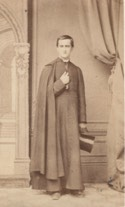

Beaubien-Perrault-Benington - Person Sheet
Beaubien-Perrault-Benington - Person Sheet

NameAbbé Charles Philippe Beaubien
Birth17 Oct 1843, Montréal, Québec
Death2 Jul 1914, Montréal, Québec
Occupationprêtre
FatherDr. Pierre Beaubien (1796-1881)
MotherM. Justine Casgrain (1804-1882)
Notes for Abbé Charles Philippe Beaubien
Pretre St-Sulpice.
[Rumilly] Cure du Sault-au-Recollet. Fonda un college a la Nouvelle Orleans.
234Né à Montréal en 1843, Charles-Philippe Beaubien est curé de Saint-Paul de Montréal, 1875, et du Sault-au-Récollet, 1890. Écrivain, il est l'auteur de l'Histoire du Sault-au-Récollet, 1898, et de la généalogie de la Famille Trottier-des-Rivières-Beaubien, 1913. Il meurt en 1914 à l'âge de 71 ans
235 Album Stuart-deGaspé
236[bapteme] parrain Eugène Hypolite Beaubien (frère) et marraine Elize (Eliza) Casgrain
http://www.patrimoine-culturel.gouv.qc.ca/rpcq/det...ype=pge#.Wu8nscgh1p0
Né le 17 octobre 1843 à Montréal, Charles-Philippe Beaubien est le fils de Rémi Beaubien, médecin, et de Justine Casgrain.
Beaubien étudie au séminaire de Montréal et est ordonné prêtre en 1866 par Mgr Ignace Bourget. Il est vicaire de Saint-Valentin (1866-1867) et de Saint-Vincent-de-Paul de Montréal (1867-1870) avant d'être envoyé en Louisiane de 1870 à 1875. Dans cet État, il fonde un collège, une église, un presbytère et une école en plus d'agir à titre de supérieur et de missionnaire. À son retour au Québec, il est curé de Saint-Paul de Montréal de 1875 à 1882, de Saint-Antoine-de-Lavaltrie de 1883 à 1887, de Saint-Anicet de 1887 à 1890 et de La Visitation-du-Sault-au-Récollet (La Visitation-de-la-Bienheureuse-Vierge-Marie) de 1890 jusqu'à sa retraite.
Il a publié Le Sault-au-Récollet : ses rapports avec les premiers temps de la colonie : mission-paroisse (1898) et Écrin d'amour familial : détails historiques au sujet d'une famille... (1914).
Il est décédé en 1914.
https://books.google.com/books?id=b-ZYAAAAMAAJ&...o&hl=en&sa=X&ved=2ahUKEwj73_Wtu_HaAhXq7IMKHWHSDZgQ6AEwD3oECAAQZQ#v=onepage&q=Abbe%20Charles%20Philippe%20Beaubien&f=false
Testament
https://www.ancestry.com/imageviewer/collections/6...646605215.1620187718
[Rumilly] Cure du Sault-au-Recollet. Fonda un college a la Nouvelle Orleans.
234Né à Montréal en 1843, Charles-Philippe Beaubien est curé de Saint-Paul de Montréal, 1875, et du Sault-au-Récollet, 1890. Écrivain, il est l'auteur de l'Histoire du Sault-au-Récollet, 1898, et de la généalogie de la Famille Trottier-des-Rivières-Beaubien, 1913. Il meurt en 1914 à l'âge de 71 ans
235 Album Stuart-deGaspé
236[bapteme] parrain Eugène Hypolite Beaubien (frère) et marraine Elize (Eliza) Casgrain
http://www.patrimoine-culturel.gouv.qc.ca/rpcq/det...ype=pge#.Wu8nscgh1p0
Né le 17 octobre 1843 à Montréal, Charles-Philippe Beaubien est le fils de Rémi Beaubien, médecin, et de Justine Casgrain.
Beaubien étudie au séminaire de Montréal et est ordonné prêtre en 1866 par Mgr Ignace Bourget. Il est vicaire de Saint-Valentin (1866-1867) et de Saint-Vincent-de-Paul de Montréal (1867-1870) avant d'être envoyé en Louisiane de 1870 à 1875. Dans cet État, il fonde un collège, une église, un presbytère et une école en plus d'agir à titre de supérieur et de missionnaire. À son retour au Québec, il est curé de Saint-Paul de Montréal de 1875 à 1882, de Saint-Antoine-de-Lavaltrie de 1883 à 1887, de Saint-Anicet de 1887 à 1890 et de La Visitation-du-Sault-au-Récollet (La Visitation-de-la-Bienheureuse-Vierge-Marie) de 1890 jusqu'à sa retraite.
Il a publié Le Sault-au-Récollet : ses rapports avec les premiers temps de la colonie : mission-paroisse (1898) et Écrin d'amour familial : détails historiques au sujet d'une famille... (1914).
Il est décédé en 1914.
https://books.google.com/books?id=b-ZYAAAAMAAJ&...o&hl=en&sa=X&ved=2ahUKEwj73_Wtu_HaAhXq7IMKHWHSDZgQ6AEwD3oECAAQZQ#v=onepage&q=Abbe%20Charles%20Philippe%20Beaubien&f=false
Testament
https://www.ancestry.com/imageviewer/collections/6...646605215.1620187718